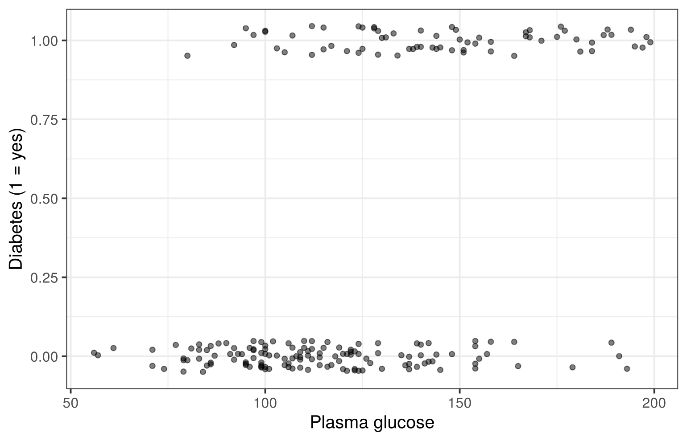
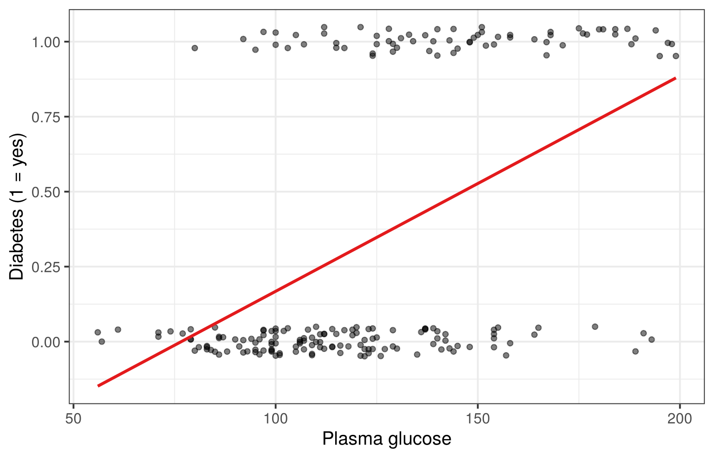
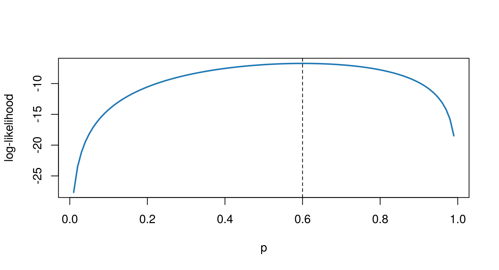
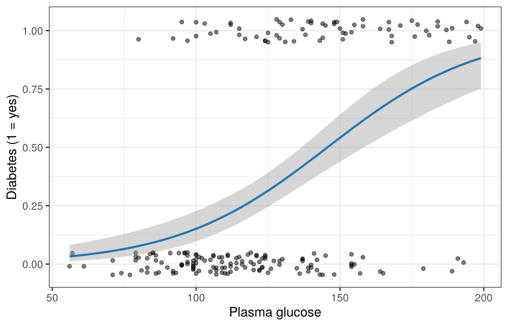

Session 14 of the course · Slides for this session
(PDF)
Learning goals. After this lesson you can
- explain why a linear model is unsuitable for a binary outcome;
- explain the idea of maximum likelihood estimation;
- fit a logistic regression and interpret its coefficients as odds
ratios;
- turn predicted probabilities into classifications and evaluate them
on new data.
The data
The Pima.tr and Pima.te data sets in the
MASS package come from a study of women of Pima Indian
heritage aged 21 or older. The outcome type records whether
a woman has diabetes. We use Pima.tr (200 women) to fit
models and Pima.te (332 women) to test them.
train <- Pima.tr
test <- Pima.te
train$diabetes <- as.integer(train$type == "Yes")
test$diabetes <- as.integer(test$type == "Yes")
head(train)
## npreg glu bp skin bmi ped age type diabetes
## 1 5 86 68 28 30.2 0.364 24 No 0
## 2 7 195 70 33 25.1 0.163 55 Yes 1
## 3 5 77 82 41 35.8 0.156 35 No 0
## 4 0 165 76 43 47.9 0.259 26 No 0
## 5 0 107 60 25 26.4 0.133 23 No 0
## 6 5 97 76 27 35.6 0.378 52 Yes 1
## [1] 0.34
Let us start with one predictor: plasma glucose concentration
(glu) from an oral glucose tolerance test. Because the
outcome is 0 or 1, many points overlap. Adding a little random noise
(jittering) makes them visible:
p <- ggplot(train, aes(glu, diabetes)) +
geom_jitter(width = 0, height = 0.05, alpha = 0.5) +
labs(x = "Plasma glucose", y = "Diabetes (1 = yes)")
p

Why not a straight line?
p + geom_smooth(method = "lm", se = FALSE, colour = pal[6])

A straight line predicts “probabilities” below 0 and above 1 at the
extremes, and assumes that each extra unit of glucose changes the
probability by the same amount everywhere. Logistic regression instead
models the log-odds:
\[\log\frac{p}{1-p} = \beta_0 + \beta_1 x,
\qquad
p = \frac{1}{1 + e^{-(\beta_0 + \beta_1 x)}}.\]
The S-shaped curve always stays between 0 and 1.
How are the coefficients estimated? Maximum likelihood
Least squares is no longer appropriate, so logistic regression uses
maximum likelihood: choose the parameter values under
which the observed data are most likely. For independent observations
\(z_1, \dots, z_n\) the likelihood
is
\[L(\theta) = \prod_{i=1}^{n} f(z_i \mid
\theta), \qquad
\log L(\theta) = \sum_{i=1}^{n} \log f(z_i \mid \theta).\]
Comparing two explanations. We observe the values 0
and 3 and propose that they come either from \(N(1, 2^2)\) or from \(N(2, 1^2)\). Which explanation makes the
data more likely?
x <- c(0, 3)
c("N(1, 2)" = sum(dnorm(x, mean = 1, sd = 2, log = TRUE)),
"N(2, 1)" = sum(dnorm(x, mean = 2, sd = 1, log = TRUE)))
## N(1, 2) N(2, 1)
## -3.849171 -4.337877
The log-likelihood is higher for \(N(1,
2^2)\): the wider distribution accounts better for two
observations that lie far apart.
Searching over all values. Suppose 6 of 10 patients
respond to a treatment. The likelihood of a response probability \(p\) is \(p^6(1-p)^4\):
p_grid <- seq(0.01, 0.99, 0.01)
loglik <- 6 * log(p_grid) + 4 * log(1 - p_grid)
plot(p_grid, loglik, type = "l", lwd = 2, col = pal[2],
xlab = "p", ylab = "log-likelihood")
abline(v = p_grid[which.max(loglik)], lty = 2)

p_grid[which.max(loglik)]
## [1] 0.6
The maximum is at \(p = 0.6\), the
observed proportion. glm() does the same for the
coefficients of a logistic regression, searching numerically for the
values that maximise the likelihood of the observed outcomes.
Fitting the model
fit <- glm(diabetes ~ glu, data = train, family = binomial)
summary(fit)
##
## Call:
## glm(formula = diabetes ~ glu, family = binomial, data = train)
##
## Coefficients:
## Estimate Std. Error z value Pr(>|z|)
## (Intercept) -5.503636 0.836077 -6.583 4.62e-11 ***
## glu 0.037784 0.006278 6.019 1.76e-09 ***
## ---
## Signif. codes: 0 '***' 0.001 '**' 0.01 '*' 0.05 '.' 0.1 ' ' 1
##
## (Dispersion parameter for binomial family taken to be 1)
##
## Null deviance: 256.41 on 199 degrees of freedom
## Residual deviance: 207.37 on 198 degrees of freedom
## AIC: 211.37
##
## Number of Fisher Scoring iterations: 4
p + geom_smooth(method = "glm", method.args = list(family = binomial),
colour = pal[2])

Interpreting the coefficients
The slope is a change in log-odds, which is hard to interpret
directly. Exponentiating it gives an odds ratio:
## (Intercept) glu
## 0.00407194 1.03850660
## 2.5 % 97.5 %
## (Intercept) 0.0007136674 0.0192012
## glu 1.0264591081 1.0521554
Each additional unit of glucose multiplies the odds of diabetes by
about 1.039. For a 10-unit difference the odds are multiplied by \(1.039^{10} \approx 1.46\).
At which glucose level is the predicted probability exactly 0.5? Then
the log-odds are zero, so \(x =
-\beta_0/\beta_1\):
-coef(fit)[1] / coef(fit)[2]
## (Intercept)
## 145.6616
Several predictors
fit2 <- glm(diabetes ~ glu + bmi + age + ped, data = train, family = binomial)
round(cbind(odds_ratio = exp(coef(fit2)), exp(confint(fit2))), 3)
## odds_ratio 2.5 % 97.5 %
## (Intercept) 0.000 0.000 0.001
## glu 1.032 1.019 1.046
## bmi 1.080 1.015 1.153
## age 1.060 1.025 1.099
## ped 5.583 1.587 20.962
Each odds ratio now compares women who differ in one predictor while
the others are held constant. ped is a diabetes pedigree
function, a score summarising family history of diabetes.
From probabilities to classifications
predict(..., type = "response") returns predicted
probabilities. A common (but not obligatory) rule classifies a woman as
“diabetes” when the probability exceeds 0.5. A fair test of a model uses
data that were not used to fit it:
test$prob <- predict(fit2, newdata = test, type = "response")
test$pred <- as.integer(test$prob > 0.5)
table(predicted = test$pred, observed = test$diabetes)
## observed
## predicted 0 1
## 0 196 42
## 1 27 67
mean(test$pred == test$diabetes) # accuracy
## [1] 0.7921687
c(sensitivity = mean(test$pred[test$diabetes == 1] == 1),
specificity = mean(test$pred[test$diabetes == 0] == 0))
## sensitivity specificity
## 0.6146789 0.8789238
Accuracy alone hides an important trade-off.
Sensitivity is the proportion of women with diabetes
who are correctly identified; specificity is the
proportion without diabetes who are correctly identified. Lowering the
threshold raises sensitivity and lowers specificity. Which balance is
acceptable depends on the cost of missing a case compared with the cost
of a false alarm.
Try it yourself
- Change the classification threshold to 0.3. How do sensitivity and
specificity change? When might a screening programme prefer this
threshold?
- Compute accuracy on the training data and compare it with
the test data. Why is the training accuracy a too optimistic
estimate?
- Using the built-in
mtcars data, model transmission type
(am, 1 = manual) with mpg and hp.
Interpret the odds ratio for hp.
LS0tCnRpdGxlOiAiTG9naXN0aWMgcmVncmVzc2lvbiIKLS0tCgpgYGB7ciBzZXR1cCwgaW5jbHVkZT1GQUxTRX0Ka25pdHI6Om9wdHNfY2h1bmskc2V0KGVjaG8gPSBUUlVFLCBmaWcud2lkdGggPSA3LCBmaWcuaGVpZ2h0ID0gNC41LCBkcGkgPSAxMTAsCiAgICAgICAgICAgICAgICAgICAgICBtZXNzYWdlID0gRkFMU0UpCmxpYnJhcnkoZ2dwbG90MikKbGlicmFyeShSQ29sb3JCcmV3ZXIpCmxpYnJhcnkoTUFTUykKcGFsIDwtIGJyZXdlci5wYWwoOCwgIlBhaXJlZCIpCnRoZW1lX3NldCh0aGVtZV9idyhiYXNlX3NpemUgPSAxMykpCmBgYAoKKlNlc3Npb24gMTQgb2YgdGhlIFtjb3Vyc2VdKGluZGV4Lmh0bWwpIMK3IFtTbGlkZXMgZm9yIHRoaXMgc2Vzc2lvbiAoUERGKV0oc2xpZGVzLzE0LWdlbmVyYWxpc2VkLWxpbmVhci1tb2RlbHMucGRmKSoKCioqTGVhcm5pbmcgZ29hbHMuKiogQWZ0ZXIgdGhpcyBsZXNzb24geW91IGNhbgoKLSBleHBsYWluIHdoeSBhIGxpbmVhciBtb2RlbCBpcyB1bnN1aXRhYmxlIGZvciBhIGJpbmFyeSBvdXRjb21lOwotIGV4cGxhaW4gdGhlIGlkZWEgb2YgbWF4aW11bSBsaWtlbGlob29kIGVzdGltYXRpb247Ci0gZml0IGEgbG9naXN0aWMgcmVncmVzc2lvbiBhbmQgaW50ZXJwcmV0IGl0cyBjb2VmZmljaWVudHMgYXMgb2RkcyByYXRpb3M7Ci0gdHVybiBwcmVkaWN0ZWQgcHJvYmFiaWxpdGllcyBpbnRvIGNsYXNzaWZpY2F0aW9ucyBhbmQgZXZhbHVhdGUgdGhlbSBvbiBuZXcgZGF0YS4KCiMjIFRoZSBkYXRhCgpUaGUgYFBpbWEudHJgIGFuZCBgUGltYS50ZWAgZGF0YSBzZXRzIGluIHRoZSBgTUFTU2AgcGFja2FnZSBjb21lIGZyb20gYSBzdHVkeSBvZgp3b21lbiBvZiBQaW1hIEluZGlhbiBoZXJpdGFnZSBhZ2VkIDIxIG9yIG9sZGVyLiBUaGUgb3V0Y29tZSBgdHlwZWAgcmVjb3Jkcwp3aGV0aGVyIGEgd29tYW4gaGFzIGRpYWJldGVzLiBXZSB1c2UgYFBpbWEudHJgICgyMDAgd29tZW4pIHRvIGZpdCBtb2RlbHMgYW5kCmBQaW1hLnRlYCAoMzMyIHdvbWVuKSB0byB0ZXN0IHRoZW0uCgpgYGB7ciBkYXRhfQp0cmFpbiA8LSBQaW1hLnRyCnRlc3QgIDwtIFBpbWEudGUKdHJhaW4kZGlhYmV0ZXMgPC0gYXMuaW50ZWdlcih0cmFpbiR0eXBlID09ICJZZXMiKQp0ZXN0JGRpYWJldGVzICA8LSBhcy5pbnRlZ2VyKHRlc3QkdHlwZSA9PSAiWWVzIikKaGVhZCh0cmFpbikKbWVhbih0cmFpbiRkaWFiZXRlcykKYGBgCgpMZXQgdXMgc3RhcnQgd2l0aCBvbmUgcHJlZGljdG9yOiBwbGFzbWEgZ2x1Y29zZSBjb25jZW50cmF0aW9uIChgZ2x1YCkgZnJvbSBhbgpvcmFsIGdsdWNvc2UgdG9sZXJhbmNlIHRlc3QuIEJlY2F1c2UgdGhlIG91dGNvbWUgaXMgMCBvciAxLCBtYW55IHBvaW50cyBvdmVybGFwLgpBZGRpbmcgYSBsaXR0bGUgcmFuZG9tIG5vaXNlICgqaml0dGVyaW5nKikgbWFrZXMgdGhlbSB2aXNpYmxlOgoKYGBge3IgcGxvdC1kYXRhfQpwIDwtIGdncGxvdCh0cmFpbiwgYWVzKGdsdSwgZGlhYmV0ZXMpKSArCiAgZ2VvbV9qaXR0ZXIod2lkdGggPSAwLCBoZWlnaHQgPSAwLjA1LCBhbHBoYSA9IDAuNSkgKwogIGxhYnMoeCA9ICJQbGFzbWEgZ2x1Y29zZSIsIHkgPSAiRGlhYmV0ZXMgKDEgPSB5ZXMpIikKcApgYGAKCiMjIFdoeSBub3QgYSBzdHJhaWdodCBsaW5lPwoKYGBge3IgbGluZWFyLWZpdH0KcCArIGdlb21fc21vb3RoKG1ldGhvZCA9ICJsbSIsIHNlID0gRkFMU0UsIGNvbG91ciA9IHBhbFs2XSkKYGBgCgpBIHN0cmFpZ2h0IGxpbmUgcHJlZGljdHMgInByb2JhYmlsaXRpZXMiIGJlbG93IDAgYW5kIGFib3ZlIDEgYXQgdGhlIGV4dHJlbWVzLAphbmQgYXNzdW1lcyB0aGF0IGVhY2ggZXh0cmEgdW5pdCBvZiBnbHVjb3NlIGNoYW5nZXMgdGhlIHByb2JhYmlsaXR5IGJ5IHRoZSBzYW1lCmFtb3VudCBldmVyeXdoZXJlLiBMb2dpc3RpYyByZWdyZXNzaW9uIGluc3RlYWQgbW9kZWxzIHRoZSAqKmxvZy1vZGRzKio6CgokJFxsb2dcZnJhY3twfXsxLXB9ID0gXGJldGFfMCArIFxiZXRhXzEgeCwgXHFxdWFkCnAgPSBcZnJhY3sxfXsxICsgZV57LShcYmV0YV8wICsgXGJldGFfMSB4KX19LiQkCgpUaGUgUy1zaGFwZWQgY3VydmUgYWx3YXlzIHN0YXlzIGJldHdlZW4gMCBhbmQgMS4KCiMjIEhvdyBhcmUgdGhlIGNvZWZmaWNpZW50cyBlc3RpbWF0ZWQ/IE1heGltdW0gbGlrZWxpaG9vZAoKTGVhc3Qgc3F1YXJlcyBpcyBubyBsb25nZXIgYXBwcm9wcmlhdGUsIHNvIGxvZ2lzdGljIHJlZ3Jlc3Npb24gdXNlcyAqKm1heGltdW0KbGlrZWxpaG9vZCoqOiBjaG9vc2UgdGhlIHBhcmFtZXRlciB2YWx1ZXMgdW5kZXIgd2hpY2ggdGhlIG9ic2VydmVkIGRhdGEgYXJlCm1vc3QgbGlrZWx5LiBGb3IgaW5kZXBlbmRlbnQgb2JzZXJ2YXRpb25zICR6XzEsIFxkb3RzLCB6X24kIHRoZSBsaWtlbGlob29kIGlzCgokJEwoXHRoZXRhKSA9IFxwcm9kX3tpPTF9XntufSBmKHpfaSBcbWlkIFx0aGV0YSksIFxxcXVhZApcbG9nIEwoXHRoZXRhKSA9IFxzdW1fe2k9MX1ee259IFxsb2cgZih6X2kgXG1pZCBcdGhldGEpLiQkCgoqKkNvbXBhcmluZyB0d28gZXhwbGFuYXRpb25zLioqIFdlIG9ic2VydmUgdGhlIHZhbHVlcyAwIGFuZCAzIGFuZCBwcm9wb3NlIHRoYXQKdGhleSBjb21lIGVpdGhlciBmcm9tICROKDEsIDJeMikkIG9yIGZyb20gJE4oMiwgMV4yKSQuIFdoaWNoIGV4cGxhbmF0aW9uIG1ha2VzCnRoZSBkYXRhIG1vcmUgbGlrZWx5PwoKYGBge3IgbWwtY29tcGFyZX0KeCA8LSBjKDAsIDMpCmMoIk4oMSwgMikiID0gc3VtKGRub3JtKHgsIG1lYW4gPSAxLCBzZCA9IDIsIGxvZyA9IFRSVUUpKSwKICAiTigyLCAxKSIgPSBzdW0oZG5vcm0oeCwgbWVhbiA9IDIsIHNkID0gMSwgbG9nID0gVFJVRSkpKQpgYGAKClRoZSBsb2ctbGlrZWxpaG9vZCBpcyBoaWdoZXIgZm9yICROKDEsIDJeMikkOiB0aGUgd2lkZXIgZGlzdHJpYnV0aW9uIGFjY291bnRzCmJldHRlciBmb3IgdHdvIG9ic2VydmF0aW9ucyB0aGF0IGxpZSBmYXIgYXBhcnQuCgoqKlNlYXJjaGluZyBvdmVyIGFsbCB2YWx1ZXMuKiogU3VwcG9zZSA2IG9mIDEwIHBhdGllbnRzIHJlc3BvbmQgdG8gYSB0cmVhdG1lbnQuClRoZSBsaWtlbGlob29kIG9mIGEgcmVzcG9uc2UgcHJvYmFiaWxpdHkgJHAkIGlzICRwXjYoMS1wKV40JDoKCmBgYHtyIG1sLWN1cnZlLCBmaWcuaGVpZ2h0ID0gMy44fQpwX2dyaWQgPC0gc2VxKDAuMDEsIDAuOTksIDAuMDEpCmxvZ2xpayA8LSA2ICogbG9nKHBfZ3JpZCkgKyA0ICogbG9nKDEgLSBwX2dyaWQpCnBsb3QocF9ncmlkLCBsb2dsaWssIHR5cGUgPSAibCIsIGx3ZCA9IDIsIGNvbCA9IHBhbFsyXSwKICAgICB4bGFiID0gInAiLCB5bGFiID0gImxvZy1saWtlbGlob29kIikKYWJsaW5lKHYgPSBwX2dyaWRbd2hpY2gubWF4KGxvZ2xpayldLCBsdHkgPSAyKQpwX2dyaWRbd2hpY2gubWF4KGxvZ2xpayldCmBgYAoKVGhlIG1heGltdW0gaXMgYXQgJHAgPSAwLjYkLCB0aGUgb2JzZXJ2ZWQgcHJvcG9ydGlvbi4gYGdsbSgpYCBkb2VzIHRoZSBzYW1lIGZvcgp0aGUgY29lZmZpY2llbnRzIG9mIGEgbG9naXN0aWMgcmVncmVzc2lvbiwgc2VhcmNoaW5nIG51bWVyaWNhbGx5IGZvciB0aGUgdmFsdWVzCnRoYXQgbWF4aW1pc2UgdGhlIGxpa2VsaWhvb2Qgb2YgdGhlIG9ic2VydmVkIG91dGNvbWVzLgoKIyMgRml0dGluZyB0aGUgbW9kZWwKCmBgYHtyIGdsbX0KZml0IDwtIGdsbShkaWFiZXRlcyB+IGdsdSwgZGF0YSA9IHRyYWluLCBmYW1pbHkgPSBiaW5vbWlhbCkKc3VtbWFyeShmaXQpCmBgYAoKYGBge3IgZ2xtLXBsb3R9CnAgKyBnZW9tX3Ntb290aChtZXRob2QgPSAiZ2xtIiwgbWV0aG9kLmFyZ3MgPSBsaXN0KGZhbWlseSA9IGJpbm9taWFsKSwKICAgICAgICAgICAgICAgIGNvbG91ciA9IHBhbFsyXSkKYGBgCgojIyMgSW50ZXJwcmV0aW5nIHRoZSBjb2VmZmljaWVudHMKClRoZSBzbG9wZSBpcyBhIGNoYW5nZSBpbiBsb2ctb2Rkcywgd2hpY2ggaXMgaGFyZCB0byBpbnRlcnByZXQgZGlyZWN0bHkuCkV4cG9uZW50aWF0aW5nIGl0IGdpdmVzIGFuICoqb2RkcyByYXRpbyoqOgoKYGBge3Igb2Rkcy1yYXRpb30KZXhwKGNvZWYoZml0KSkKZXhwKGNvbmZpbnQoZml0KSkKYGBgCgpFYWNoIGFkZGl0aW9uYWwgdW5pdCBvZiBnbHVjb3NlIG11bHRpcGxpZXMgdGhlIG9kZHMgb2YgZGlhYmV0ZXMgYnkgYWJvdXQKYHIgcm91bmQoZXhwKGNvZWYoZml0KVsyXSksIDMpYC4gRm9yIGEgMTAtdW5pdCBkaWZmZXJlbmNlIHRoZSBvZGRzIGFyZQptdWx0aXBsaWVkIGJ5ICRgciByb3VuZChleHAoY29lZihmaXQpWzJdKSwgMylgXnsxMH0gXGFwcHJveCBgciByb3VuZChleHAoMTAgKiBjb2VmKGZpdClbMl0pLCAyKWAkLgoKQXQgd2hpY2ggZ2x1Y29zZSBsZXZlbCBpcyB0aGUgcHJlZGljdGVkIHByb2JhYmlsaXR5IGV4YWN0bHkgMC41PyBUaGVuIHRoZQpsb2ctb2RkcyBhcmUgemVybywgc28gJHggPSAtXGJldGFfMC9cYmV0YV8xJDoKCmBgYHtyIHAtaGFsZn0KLWNvZWYoZml0KVsxXSAvIGNvZWYoZml0KVsyXQpgYGAKCiMjIFNldmVyYWwgcHJlZGljdG9ycwoKYGBge3IgZ2xtLW11bHRpfQpmaXQyIDwtIGdsbShkaWFiZXRlcyB+IGdsdSArIGJtaSArIGFnZSArIHBlZCwgZGF0YSA9IHRyYWluLCBmYW1pbHkgPSBiaW5vbWlhbCkKcm91bmQoY2JpbmQob2Rkc19yYXRpbyA9IGV4cChjb2VmKGZpdDIpKSwgZXhwKGNvbmZpbnQoZml0MikpKSwgMykKYGBgCgpFYWNoIG9kZHMgcmF0aW8gbm93IGNvbXBhcmVzIHdvbWVuIHdobyBkaWZmZXIgaW4gb25lIHByZWRpY3RvciB3aGlsZSB0aGUgb3RoZXJzCmFyZSBoZWxkIGNvbnN0YW50LiBgcGVkYCBpcyBhIGRpYWJldGVzIHBlZGlncmVlIGZ1bmN0aW9uLCBhIHNjb3JlIHN1bW1hcmlzaW5nCmZhbWlseSBoaXN0b3J5IG9mIGRpYWJldGVzLgoKIyMgRnJvbSBwcm9iYWJpbGl0aWVzIHRvIGNsYXNzaWZpY2F0aW9ucwoKYHByZWRpY3QoLi4uLCB0eXBlID0gInJlc3BvbnNlIilgIHJldHVybnMgcHJlZGljdGVkIHByb2JhYmlsaXRpZXMuIEEgY29tbW9uCihidXQgbm90IG9ibGlnYXRvcnkpIHJ1bGUgY2xhc3NpZmllcyBhIHdvbWFuIGFzICJkaWFiZXRlcyIgd2hlbiB0aGUgcHJvYmFiaWxpdHkKZXhjZWVkcyAwLjUuIEEgZmFpciB0ZXN0IG9mIGEgbW9kZWwgdXNlcyBkYXRhIHRoYXQgd2VyZSAqKm5vdCoqIHVzZWQgdG8gZml0IGl0OgoKYGBge3IgcHJlZGljdH0KdGVzdCRwcm9iIDwtIHByZWRpY3QoZml0MiwgbmV3ZGF0YSA9IHRlc3QsIHR5cGUgPSAicmVzcG9uc2UiKQp0ZXN0JHByZWQgPC0gYXMuaW50ZWdlcih0ZXN0JHByb2IgPiAwLjUpCnRhYmxlKHByZWRpY3RlZCA9IHRlc3QkcHJlZCwgb2JzZXJ2ZWQgPSB0ZXN0JGRpYWJldGVzKQptZWFuKHRlc3QkcHJlZCA9PSB0ZXN0JGRpYWJldGVzKSAgICMgYWNjdXJhY3kKYGBgCgpgYGB7ciBzZW5zLXNwZWN9CmMoc2Vuc2l0aXZpdHkgPSBtZWFuKHRlc3QkcHJlZFt0ZXN0JGRpYWJldGVzID09IDFdID09IDEpLAogIHNwZWNpZmljaXR5ID0gbWVhbih0ZXN0JHByZWRbdGVzdCRkaWFiZXRlcyA9PSAwXSA9PSAwKSkKYGBgCgpBY2N1cmFjeSBhbG9uZSBoaWRlcyBhbiBpbXBvcnRhbnQgdHJhZGUtb2ZmLiAqKlNlbnNpdGl2aXR5KiogaXMgdGhlIHByb3BvcnRpb24Kb2Ygd29tZW4gd2l0aCBkaWFiZXRlcyB3aG8gYXJlIGNvcnJlY3RseSBpZGVudGlmaWVkOyAqKnNwZWNpZmljaXR5KiogaXMgdGhlCnByb3BvcnRpb24gd2l0aG91dCBkaWFiZXRlcyB3aG8gYXJlIGNvcnJlY3RseSBpZGVudGlmaWVkLiBMb3dlcmluZyB0aGUKdGhyZXNob2xkIHJhaXNlcyBzZW5zaXRpdml0eSBhbmQgbG93ZXJzIHNwZWNpZmljaXR5LiBXaGljaCBiYWxhbmNlIGlzCmFjY2VwdGFibGUgZGVwZW5kcyBvbiB0aGUgY29zdCBvZiBtaXNzaW5nIGEgY2FzZSBjb21wYXJlZCB3aXRoIHRoZSBjb3N0IG9mIGEKZmFsc2UgYWxhcm0uCgojIyBUcnkgaXQgeW91cnNlbGYKCjEuIENoYW5nZSB0aGUgY2xhc3NpZmljYXRpb24gdGhyZXNob2xkIHRvIDAuMy4gSG93IGRvIHNlbnNpdGl2aXR5IGFuZAogICBzcGVjaWZpY2l0eSBjaGFuZ2U/IFdoZW4gbWlnaHQgYSBzY3JlZW5pbmcgcHJvZ3JhbW1lIHByZWZlciB0aGlzIHRocmVzaG9sZD8KMi4gQ29tcHV0ZSBhY2N1cmFjeSBvbiB0aGUgKnRyYWluaW5nKiBkYXRhIGFuZCBjb21wYXJlIGl0IHdpdGggdGhlIHRlc3QgZGF0YS4KICAgV2h5IGlzIHRoZSB0cmFpbmluZyBhY2N1cmFjeSBhIHRvbyBvcHRpbWlzdGljIGVzdGltYXRlPwozLiBVc2luZyB0aGUgYnVpbHQtaW4gYG10Y2Fyc2AgZGF0YSwgbW9kZWwgdHJhbnNtaXNzaW9uIHR5cGUgKGBhbWAsIDEgPSBtYW51YWwpCiAgIHdpdGggYG1wZ2AgYW5kIGBocGAuIEludGVycHJldCB0aGUgb2RkcyByYXRpbyBmb3IgYGhwYC4K
Jiayun Jin · Text and figures licensed under CC BY 4.0; code under the MIT License.